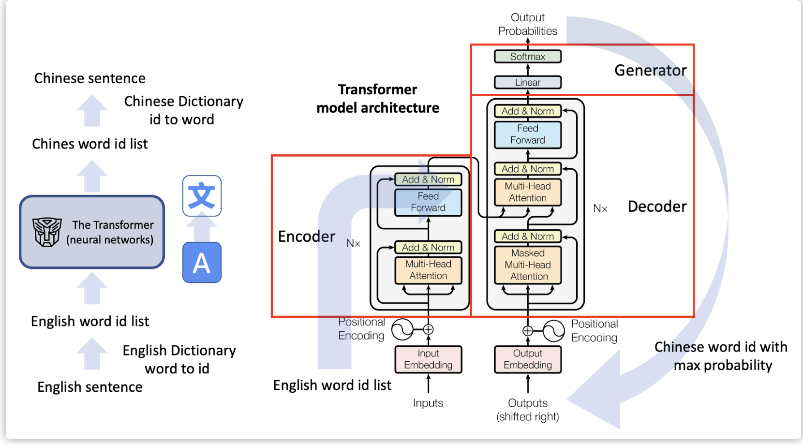
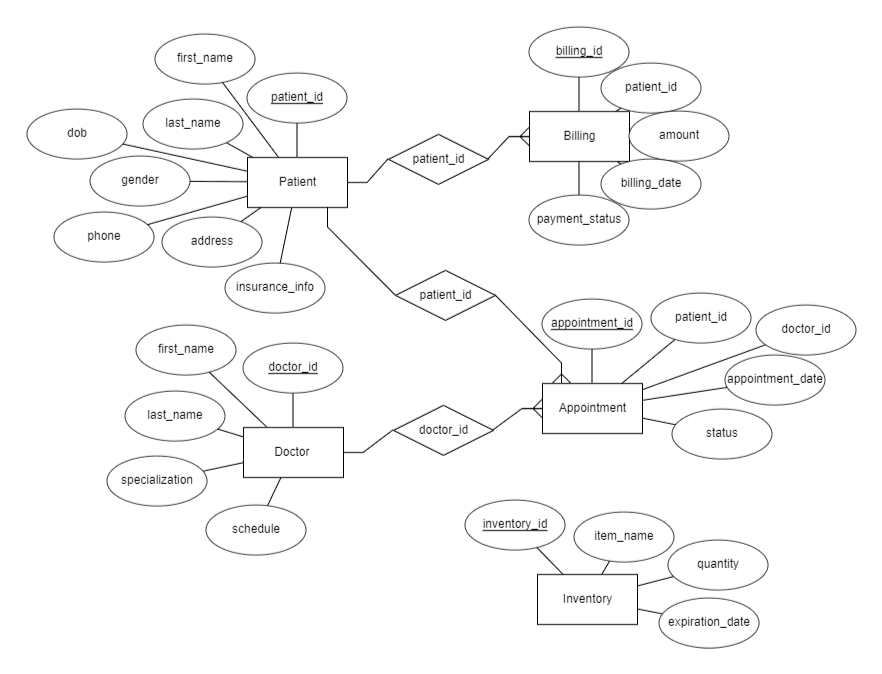

Advanced Custom Training of GPT-based Machine Translation Transformer
Developed a custom transformer model for machine translation and optimized the Helsinki NLP model from Hugging Face on a selected dataset, achieving a 30% improvement in BLEU scores.
Conducted a comparative analysis showcasing the custom model's
capabilities against pre-trained transformers for enhanced translation quality
Learn more

Optimizing Dialogue Text Summarization with Pretrained Models
Implemented and evaluated text summarization techniques on a dialogue dataset using pre-trained models (BART, Pegasus, SimpleT5), achieving a 35% improvement in summary coherence and informativeness. Conducted comparative analysis using ROUGE metrics, with Pegasus leading at 92% ROUGE-L, providing actionable insights into model performance for abstractive summarization tasks.
Learn more
Information Retrieval of YouTube Speech Data
Led an NLP project on extracting insights from YouTube speech data, utilizing SpaCy and Hugging Face Transformers to deliver 95% precision in entity recognition. Built a directed knowledge graph stored in Neo4j, visualizing syntactic dependencies and extracting
detailed data on vehicle models, manufacturers, and driving modes for actionable insights.
Learn more
Health for all Web Application using R
Deployed an ETL pipeline to clean and structure complex data, providing insights and analysis on metrics like country codes, population, live births, and mortality. Developed custom functions for visualizations, including histograms, line graphs, and radar charts, and built a user interface in RStudio with interactive widgets—such as sliders, selects, and drop-downs—to enable dynamic data exploration and feature creation.
Learn more

Empowering Health Systems: Advancing Healthcare through Online Medical Consultation
Developed a comprehensive online medical consultation system, featuring a robust database architecture to manage appointment scheduling, medical records, and feedback processing. The system integrated virtual consultation rooms for seamless doctor-patient interactions, supported by mechanisms for real-time scheduling, secure communication, and patient feedback. Additionally, implemented a medication ordering module that managed electronic prescriptions, detailed drug information, and real-time order tracking, significantly improving healthcare accessibility by allowing patients to book appointments, receive diagnoses, and order medications online, ensuring a user-friendly and contactless experience.
Learn more
Decoding Tweets: Unveiling Human vs Machine generation using Text classification
The project analyzed 30,000 tweets across FIFA World Cup 2022, US Election 2020, and Game of Thrones S8, using Logistic Regression, SVM, Random Forest, and Decision Tree models. Logistic Regression achieved the highest performance, with 76.90% accuracy for FIFA combined features and 80.94% accuracy on the merged dataset. Advanced preprocessing techniques such as tokenization, lemmatization, and BERT-based personality analysis revealed that user-generated tweets had greater variability and emotional depth, while machine-generated tweets were more uniform, achieving up to 99.98% accuracy for Game of Thrones clean tweets.
Learn more